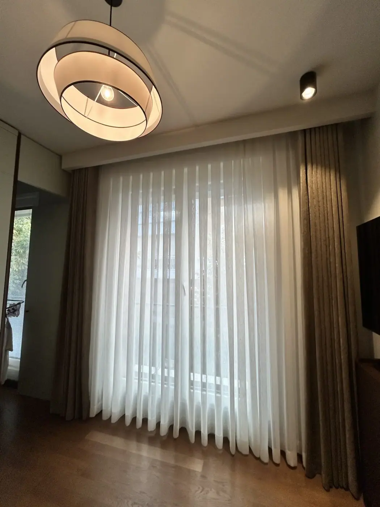
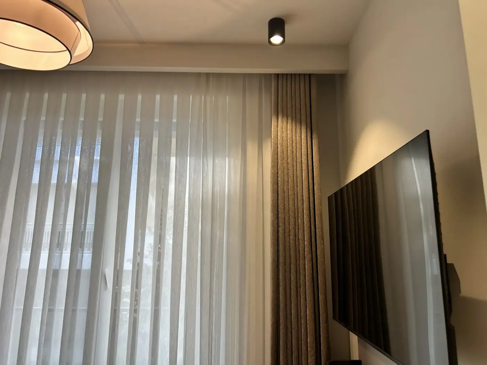
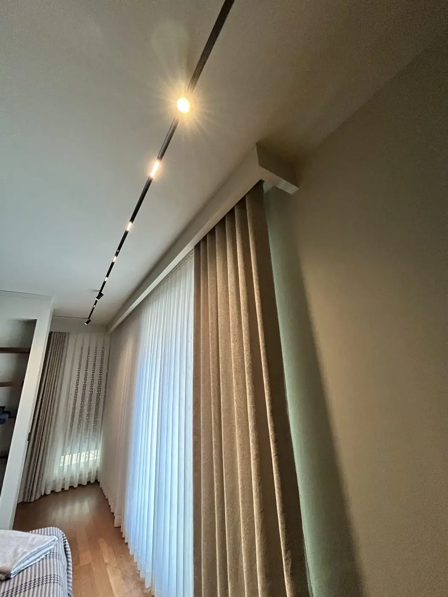
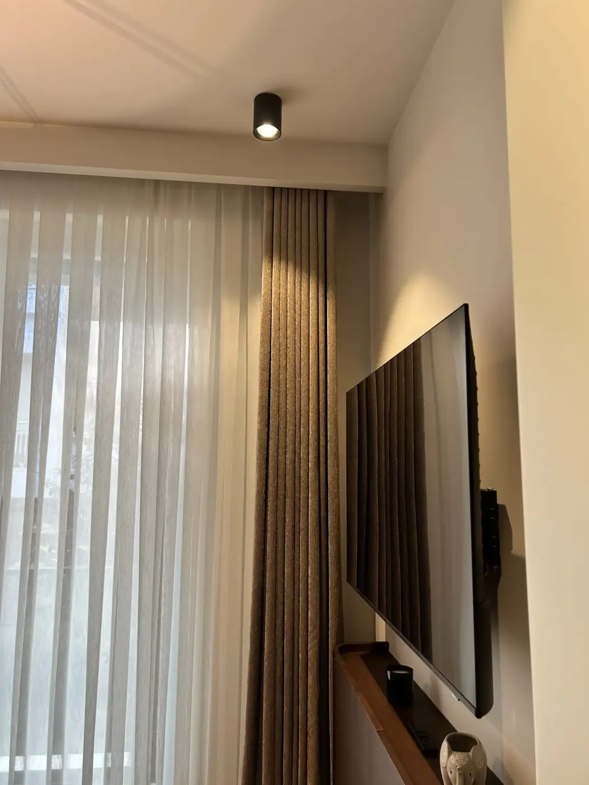
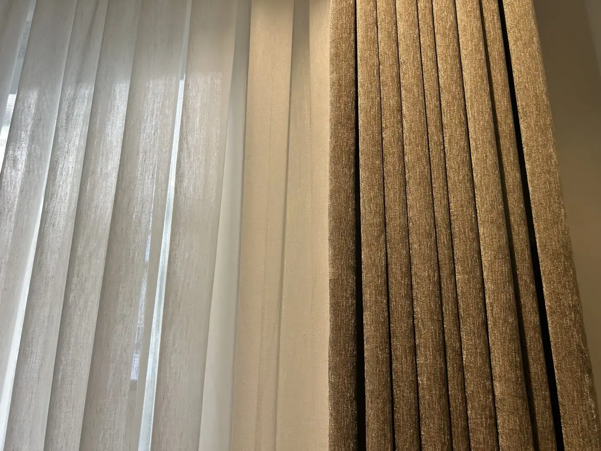
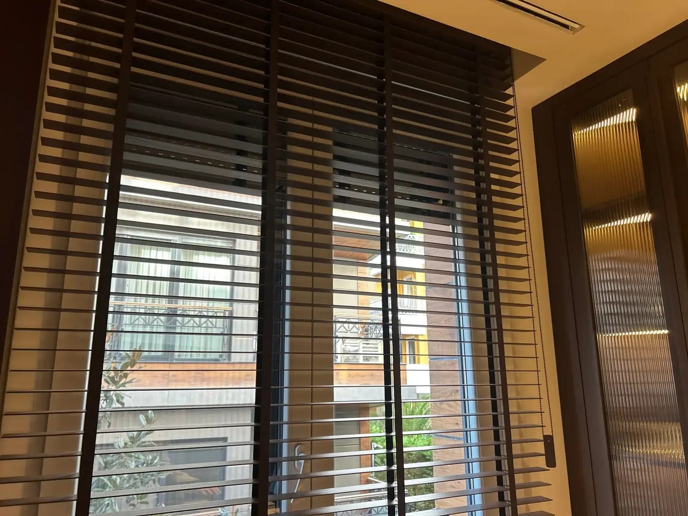
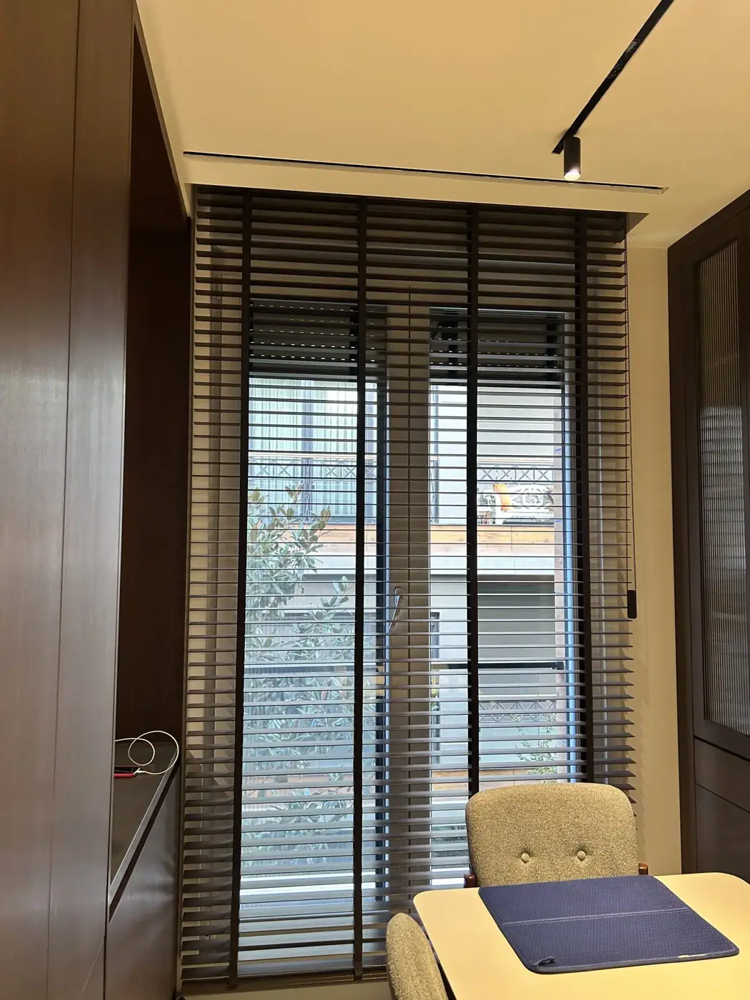
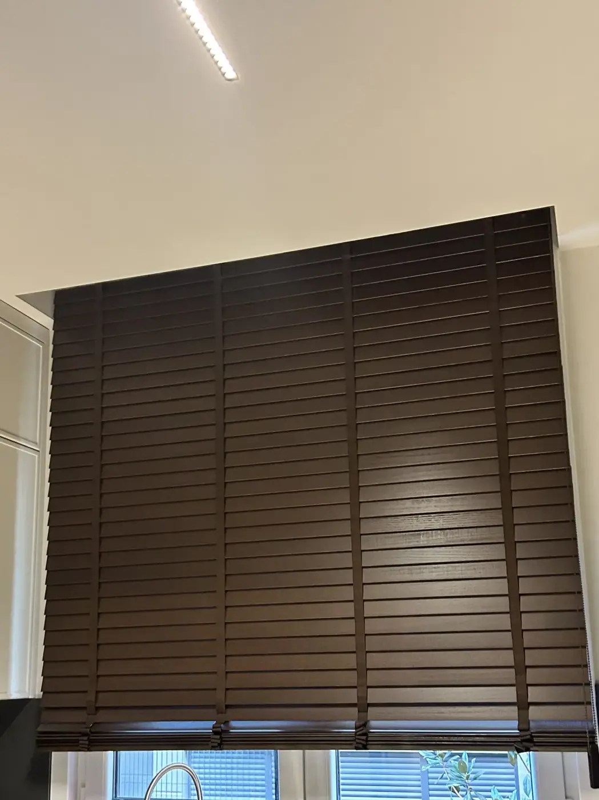
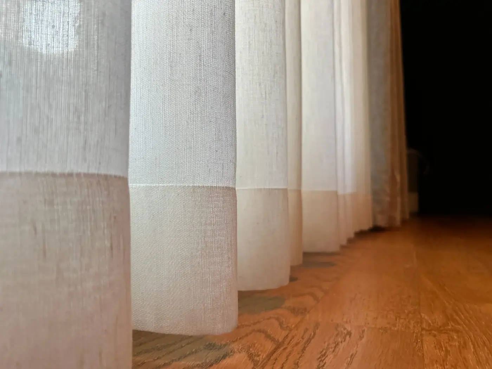

Proje · 2026
Erenköy H.K Evi
Keten, toprak, ceviz. Pencereleri tavandan yere keten dokulu tül ve toprak tonunda fonla giydirdik; çalışma odasında ve mutfakta ışığı jaluzi ayarlıyor.
Yaklaşım
Üç tonla çalıştık
Bu evde ahşap ve gün ışığı zaten güçlüydü. Perdelerin işi onlarla yarışmak değil, onları tamamlamaktı; bu yüzden üç tonla çalıştık: tülde keten, fonda toprak, jaluzide ceviz.
01 · Salon ve oda
Tül ve fon
Keten dokulu tül gün ışığını süzüp odaya yumuşak bir aydınlık olarak dağıtıyor; toprak tonundaki fon, iki yanda pencereyi çerçeveliyor. Akşam lambalar yandığında fonun dokusu öne çıkıyor ve odanın sıcaklığını taşıyor.
Raylar tavandaki boşluklarda ve perde kutularında gizli; odadan bakınca yalnızca kumaş görünüyor, tavandan yere tek bir çizgi halinde.








02 · Çalışma odası ve mutfak
Jaluzi
Çalışma odasının boydan boya penceresinde kumaş bantlı ahşap jaluzi var; kanatların koyu tonu odanın ahşap dolaplarıyla aynı aileden.
Jaluzi ışığı kanatlarının açısıyla ayarlıyor; ekran başında geçen saatler için bu esneklik önemli. Aynı tonu mutfakta da sürdürdük.








03 · Ayrıntıda
Görünmeyen yerlerdeki iş
Tülün eteğindeki geniş bant, her pencerede aynı aralıkla düşen kıvrımlar, yere kadar inen etekler. Ölçüyü evde aldık, perdeleri kendi atölyemizde diktik, montajı kendi ekibimiz yaptı.